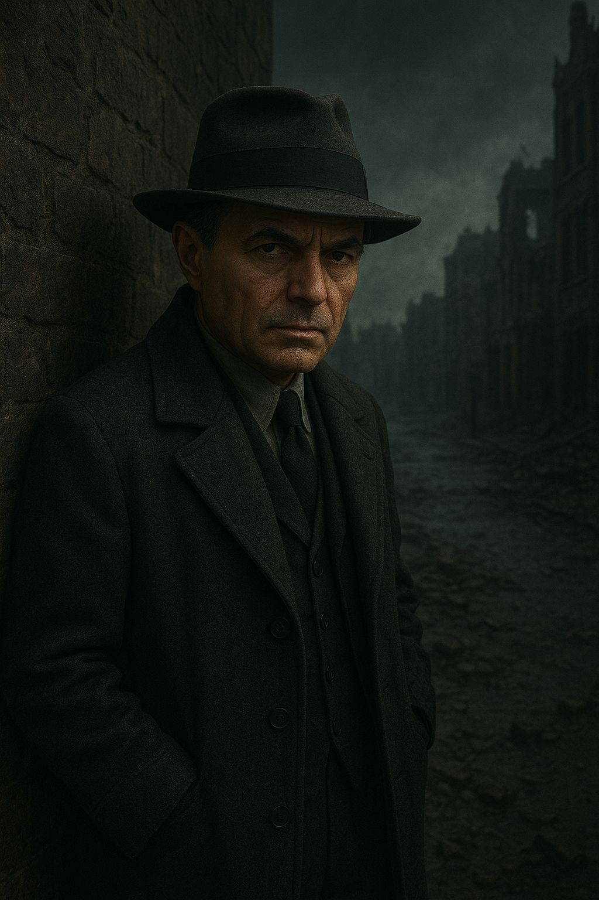
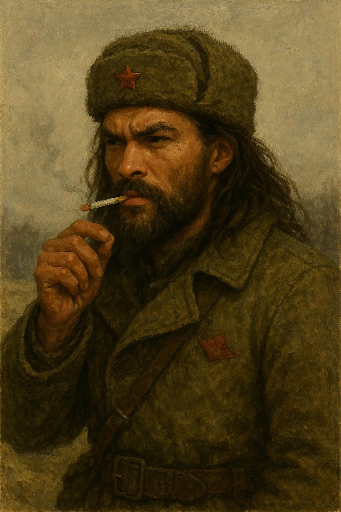
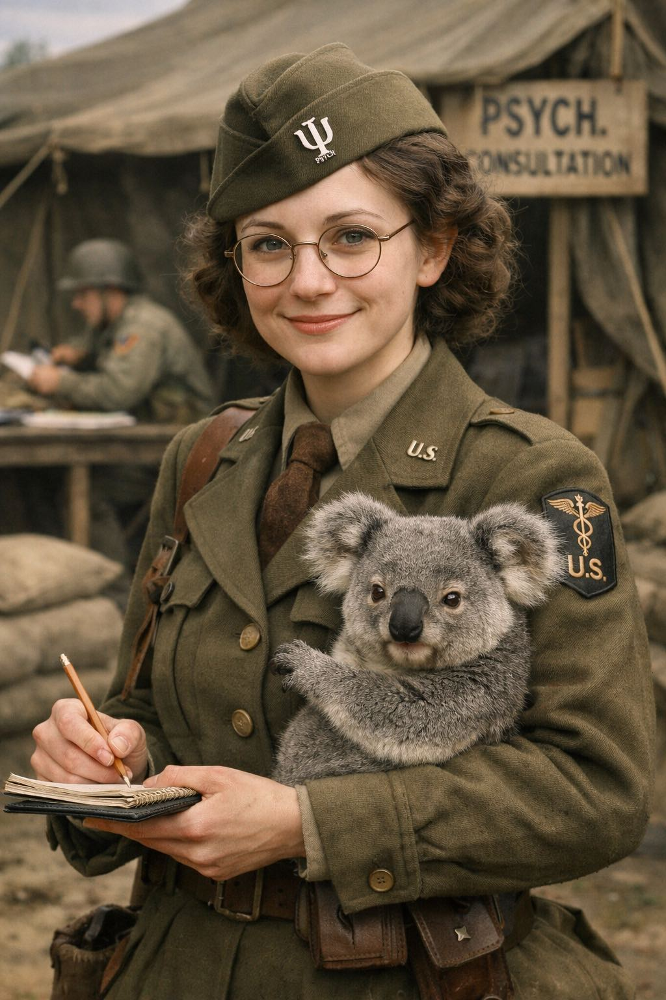
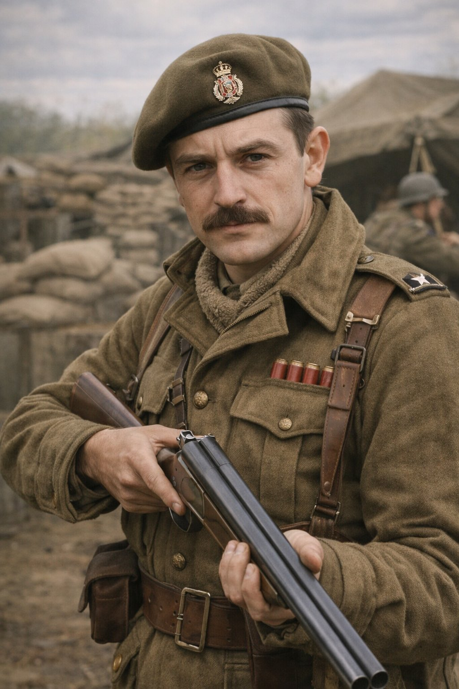
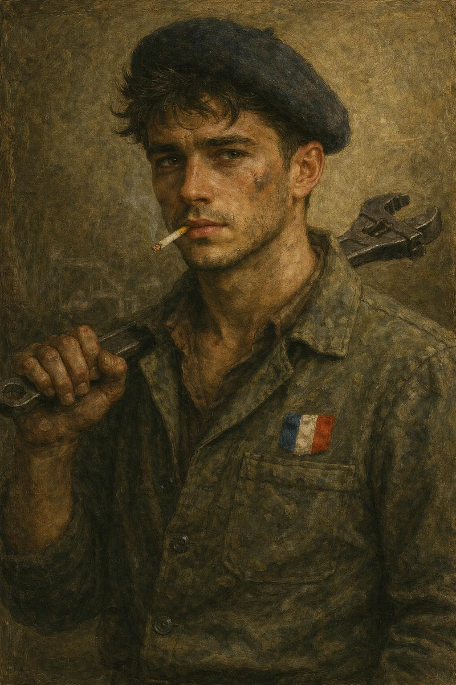

Among the Wolves
It's July 1940, less than two weeks since the Battle of France. The remnants of the French Army and the British Expeditionary Force have retreated to Dunkirk, with little hope remaining.
Characters
| Name | Archetype | Background | About | Portrait |
|---|---|---|---|---|
| James Mason | Infiltrator | Navy | Raised in the colonies, James became an undercover agent after his stint serving on submarines. He has not disclosed his Lieutenant rank and is posing as a Private. |  |
| Yuri Molotov | Soldier | Resistance | In the resistance, Yuri was well known for two things - the fact that he was built like a brick outhouse, and for always getting the job done. He's now bringing his expertise to the Allies' effort in France. |  |
| Eva Mettershed | Boffin | Academic | Eva was a Doctor of Psychology, but discovered another side to the world after walking in the Dreamlands. When she returned, she brought a pet koala with her, who has the knack of seeing things that people don't. |  |
| Cieron Dixon | Commander | Army | The numbers tattooed on Cieron's arm remind him of his past as an experimental subject, where he was injected with experimental drugs to increase his strength. Since the experiment finished with mixed results, he has made a new life in the army as a commando. |  |
| JJ Laurent | Grease Monkey | Covert Operative | When his organised crime ring was shut down, the covert operative JJ made a new identity to avoid the authorities. His expertise in engineering came in very handy when the war started, and he knows he still has connections that may be able to help him out if needed. |  |
Act 1: Fight Together, Win Together!
Scene 1: Hold the Line!
James, Ciaron and JJ are part of the relief squad dispatched to build and maintain one of the barricades. They meet up with Lieutenant Atterbury, who commands them to shore up the defenses and start repairs on the tank. With the sandbags placed, he is then shot by a sniper and the German Heer forces advance. JJ tries to repair the tank ASAP. James mans the mounted Bren machine gun and starts shooting the German troops, while Ciaron takes position and starts firing with his shotgun.
Yuri and Eva are walking down the road with orders for the C.O. when they hear shots ahead. Eva takes position behind the barricade, while Yuri uses his resistance background to sneak behind the position of some enemy troops. One of the allied soldiers behind the barricade goes down, but Private Jones keeps up covering fire.
James manages to beat back some of the troops with sprays of machine gun fire, and eventually JJ repairs the tank to great effect - he decimates two Heer squads, while Yuri takes out one commander from behind, but another soldier turns round just as he is attacking them.
Eventually, there is a call for a general retreat for the German forces. Private Jones promises to buy them all beers, and Yuri and Eva introduce themselves to the rest of the squad. They pass the orders over to Ciaron, who discovers that the five of them are to report immediately to Lieutenant Archibald Strang.
Scene 2: New Orders
Heading back to the beachfront, the squad are met with the site of long lines of troops awaiting rescue. At the makeshift HQ, they find medical staff who patch them up and Strang who motions them over and waves others away. Everyone notices numerous documents marked with "Confidential", "Top Secret" and "Section M". Strang tells them that the German troops appear to be holding back, though some mysterious secondary agency is taking their place. They are to gather information behind enemy lines, and then meet up with Professor Richard Deadman, codename Arrow at the Church of St. Marie and speak a code phrase to him. They are then directed to Captain Appleby - the quarter-master - to pick up some gear.
After being kitted out, Appleby sternly warns that she wants every round not used to drop a Jerry to be returned, and she is vocal about her lack of faith in the squad's abilities. Eva retorts, and Appleby is impressed by her response. She decides to give the team an experimental BB gun that can fire poisoned pellets, the Whisperer, though she wants a full report upon its return.
Scene 3: A New Threat
Making their way East, past enemy lines, the squad try to pick up their enemies' trail. They are successful in the task, and manage to avoid detection from the patrolling Germans, though they lost a couple of guns when escaping quickly from detection. Eventually they hear idling engines coming from a town square, and make their way to a vantage point where they spot some Heer soldiers and a large number of soldiers dressed in black greatcoats adorned with a red armband. Two figures are conversing in the centre of the square.
Scene 4: Square of Slaughter
The team notice that the black-clad troops outnumber the Heer troops by about three to one. The black-clad troops wear metal masks - not gas-masks, more like theatrical masks. They also see a hidden machine-gun nest behind the Heer troops. Watching the scene with binoculars, they are surprised when one of the men in the centre bellows "We are soldiers, not treasure hunters! Whatever madness you and your insane Schwartz Sonne ilk follow is no concern of mine not of the Reich's."
As the man walks away, a Luger fires and he falls dead. The Black Sun troops in the machine gun nest fires on the Heer troops, joined by the Panzer. The Heer are cut down in moments. The other Black Sun troops then go and finish off any survivors with pistols.
With the Black Sun troops ordered to search the area for stragglers, the squad sneak away.
Act 2: In the Wolves' Den
Scene 1: Bad News, Dangerous Plans
The squad find a way to the rendezvous site, where they meet up with Deadman. They tell him about the scene at the square, and he looks very interested. He tells them that Black Sun are sorcerers, and that the squad should 'liberate' some uniforms, infiltrate their encampment and do what they can to stop them.
Scene 2: Sheep in Wolves Clothing
With a healthy amount of teamwork, the squad manage to target a squad of Black Sun Troopers, and bottleneck them in a narrow alleyway. With a surprise attack, they start to overcome the trapped troops, but backup appears with some additional troops carrying some additional firepower - including a flamethrower! Yuri manages to wrestle the holder in such a way that he catches the Trooper on fire, killing him. The Whisperer does a good job in killing troopers over time, and soon they kill all the enemy and dress up in their uniforms (remembering to wear a gold armband from Deadman under the Black Sun armband).
Scene 3: Among the Wolves
Making their way back to the square, they see some of the dead Heer bodies being loaded into flatbed trucks. An Officer approaches and barks orders to prepare the Opel Blitz for use. They see it has taken a few stray bullets, but JJ fixes it easily enough. As he finishes, a tall blonde engineer approaches and compliments JJ in German with a slight Austrian accent. He introduces himself as Ulbrecht Schroder.
General orders to board the trucks are issued, and everyone gets aboard. On the journey, the Troopers are silent and unmoving, but the Engineers joke with one another. The journey ends overlooking a small farm, and work starts on setting up camp.